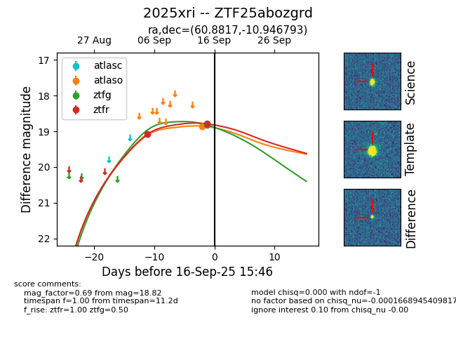

FINK: ZTF25abozgrd
Lasair: ZTF25abozgrd
ALeRCE: ZTF25abozgrd
TNS: 2025xri
YSE: 2025xri
ZTF25abozgrd (ztf,fink)
2025xri (tns,yse)
equatorial (ra, dec) = (60.8817,-10.94679)
galactic (l, b) = (202.8004,-42.14584)

last atlasc=18.78, atlaso=18.93, ztfg=19.00, ztfr=18.79
1 atlasc, 3 atlaso, 2 ztfg, 2 ztfr detections